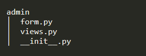

Admin is the Flask blueprint for the backstage use. We create files as the following picture.
We initialize the blueprint with this code.
We create a blueprint named admin, import the route settings from the file view.py.
We setting the routes and logics with this code.
We defined two entry functions: index and read_feedback. These entries are decorated with login_required, requiring the user being authenticated.
This is the entry function for the backstage routing with the url '/admin'. It collects all the feedback data and presents as a list with the template '/admin/index.html'.
This is the entry function for the admin to check or modify a specific feedback routing with the url '/admin/<feedback_id>'. It accept GET and POST methods. If the request method is GET, it provides the review feedback form containing the feedback information and the input fields with the template '/admin/feedback.html' to the administrator. If the request method is POST, it takes the input data from the request, updates the corresponding feedback, and notifies the success of modification.
We design the relating forms with this code.
We defined one form class with the FlaskForm class provided by flask-wtf: ReviewFeedbackForm.
This form contains four fields for presenting the information of the feedback, two fields for modifying the review information, and a submit button for sending the post request.